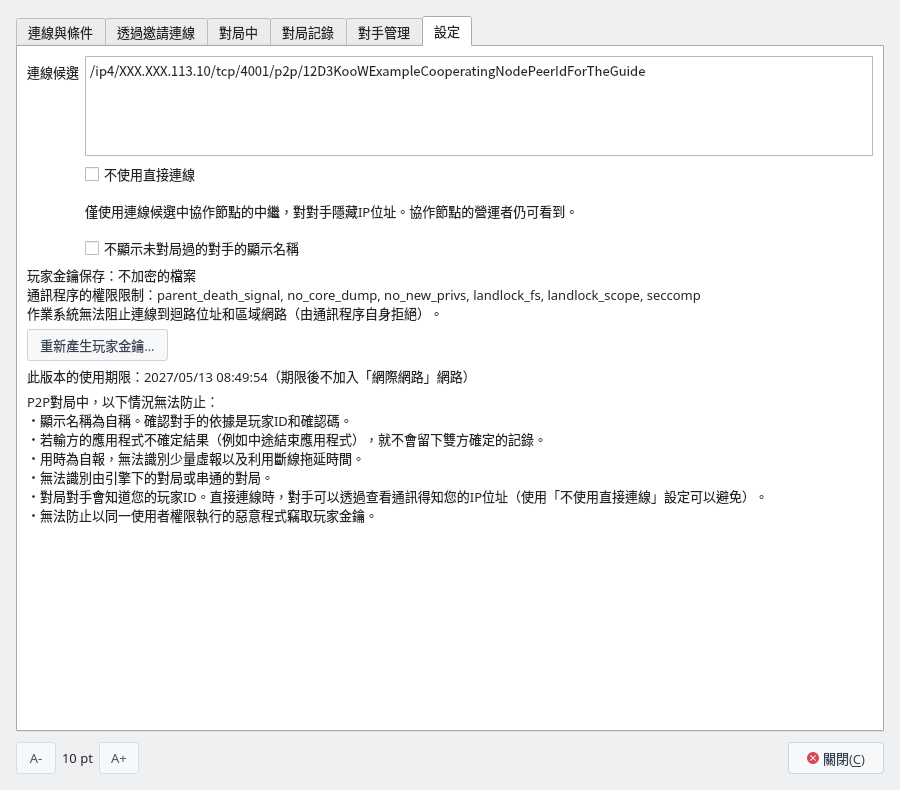
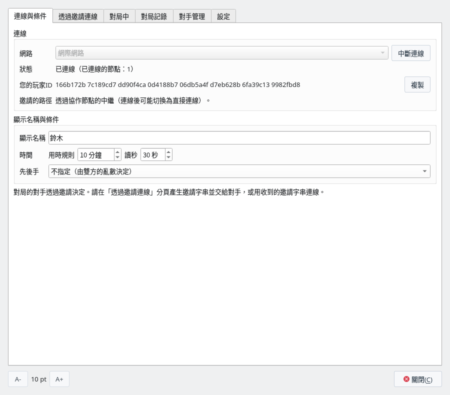
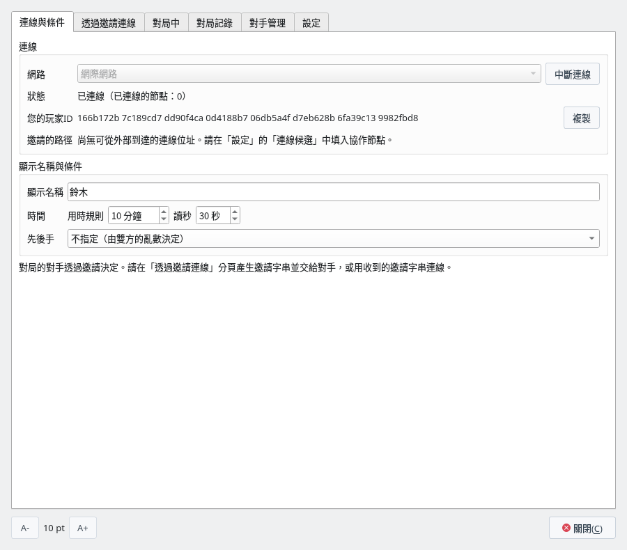
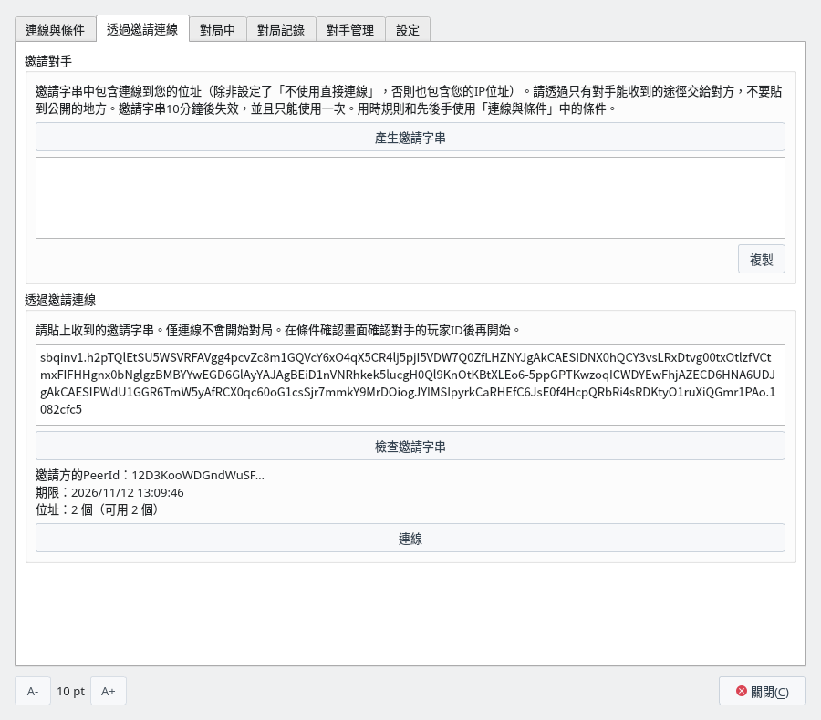
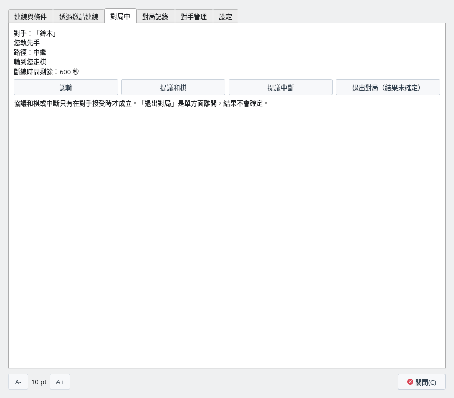
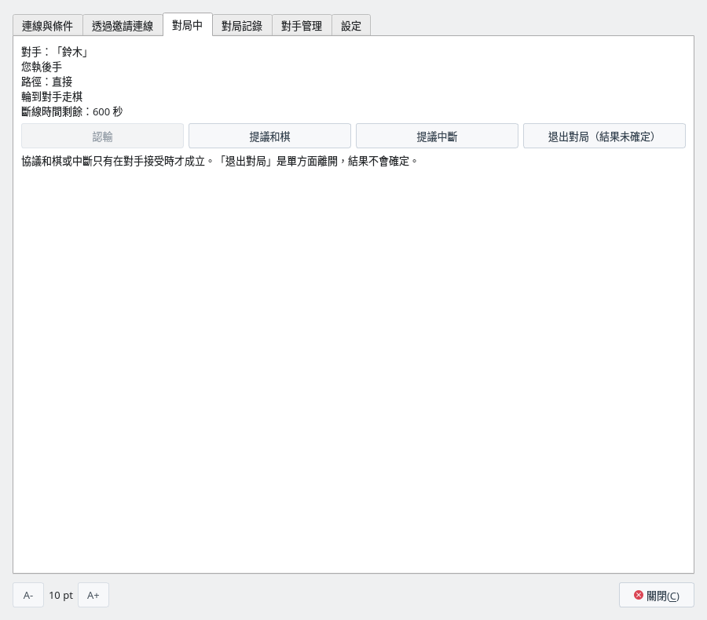
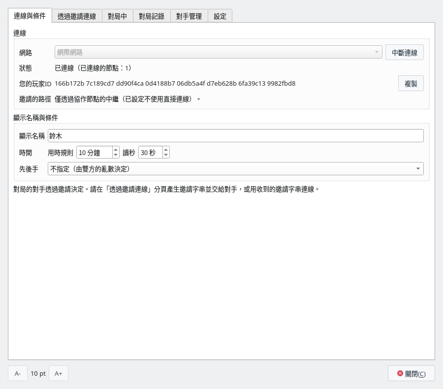

什麼是協作節點
在透過網際網路的對局中，雙方的應用程式最先連線的伺服器
要透過網際網路對局，必須在邀請字串中放入對手的應用程式連線到您的電腦所用的位址。但是，家用網路和行動網路的電腦大多在路由器內側，電腦本身並不知道自己在網際網路上以哪個位址被看到。來自外部的連線也可能被路由器擋下。P2P對局也沒有尋找對手或互相告知位址的伺服器。
因此，應用程式會先連線到執行在網際網路可以到達之處的「協作節點」，請它負責下面兩件事。
- 可達性確認：請協作節點確認從網際網路看到的這台電腦的位址，以及能否從外部到達該位址。如果能到達，就把這個位址放入邀請字串，與對手直接連線。
- 中繼：在協作節點上預約中繼的席位，並把經由協作節點的位址也放入邀請字串。無法從外部直接到達時（家用網路大多如此），對手用這個位址經由協作節點連線。
不填協作節點就以「網際網路」連線時，邀請字串中一個位址也沒有，對手無法連線。
- 做的事：只有可達性確認和中繼。
- 不做的事：不判定著手和勝負，也不儲存對局記錄。中繼的通訊在雙方的應用程式之間加密，因此它也讀不到內容（著手、玩家ID、顯示名稱）。
- 與對局伺服器的差異：即使經過中繼，對局的另一方仍是對手的應用程式，協作節點不扮演CSA網路對局的伺服器那樣的角色。對照表請見經過中繼時，協作節點也不是對局伺服器。
- 營運者能看到的：使用者的 IP 位址，以及哪些 IP 位址之間建立了連線。協作節點的程式不會把來源 IP 位址寫進輸出的記錄，但營運者檢查通訊就能知道。確認可達性時，只請協作節點逐一確認它看到的位址，不傳送使用者在區域網路內的位址。
- 中斷或延遲通訊：協作節點可以中斷或延遲它中繼的通訊，但無法改寫內容（改寫過的通訊會在加密的檢查中被發現，應用程式不會接受）。通訊中斷時，與線路中斷時一樣處理（線路中斷時）。
由誰啟動協作節點
一個協作節點就夠了。由能準備網際網路可達伺服器的人啟動，並把位址告訴對局的人
- 一個就夠：對局的兩人合起來只需要一個協作節點，不需要各自啟動。
- 兩人填入相同的位址：啟動的人告知位址，兩人都把它填入「設定」分頁的「連線候選」。邀請方沒有填入時，邀請字串中沒有連線位址。使用「不使用直接連線」的人，必須與對手填入相同的協作節點。
- 多組共用：一個協作節點可以供許多組對局者使用（中繼席位同時最多 128 人）。
- 應用程式中沒有內建：應用程式中沒有協作節點的位址，需要由對局的人自己準備。
協作節點由能準備網際網路可達伺服器的人啟動。可以是對局兩人中的一方，也可以是兩人都認識的人。
| 啟動的人 | 適合的情況 |
|---|---|
| 對局兩人中的一方 | 擁有 VPS 等伺服器，或能在家中的路由器上開放連接埠時 |
| 熟人（不參加對局的人） | 在研究會或社團中，由一人執行協作節點，全體成員共用其位址時 |
啟動的人需要下面這些條件。
- 網際網路可以到達的 IP 位址：擁有公用 IP 位址的伺服器（VPS 等），或可以開放連接埠的家用網路。行動網路，以及網路業者疊加多層位址轉換的線路（CGNAT）無法從外部到達，因此無法執行。
- Linux 或 macOS：協作節點的程式會先限制自己的權限再執行（Linux 使用 Landlock 和 seccomp，macOS 使用沙盒）。在無法施加這些限制的環境中無法執行，也不能在 Windows 上執行。本頁的步驟以 Linux 伺服器為例。
- 一個可以開放的 TCP 連接埠：本頁的範例為 4001。
- 持續執行：兩人對局期間請不要停止。透過中繼下棋的對局會在協作節點停止時斷線，如果 120 秒內無法重新連線，就會中斷（結果未確定）。
營運者能看到使用者的 IP 位址。請事先告知使用者。
啟動協作節點
把P2P對局的通訊程序 shogiboardq-peer 作為協作節點執行
協作節點就是加上 --service 啟動的P2P對局通訊程序 shogiboardq-peer。啟用P2P對局建置應用程式後，它會產生在與應用程式相同的資料夾中（安裝後放在 bin 中）。
伺服器上既不需要 Qt 也不需要螢幕。只要有 Rust（1.85 以上）和 C 編譯器，就可以只建置通訊程序。
$ git clone https://github.com/hnakada123/ShogiBoardQ.git
$ cd ShogiBoardQ
$ cargo build --release --locked -p shogiboardq-peer
$ sudo install -m 755 target/release/shogiboardq-peer /usr/local/bin/$ shogiboardq-peer --service --relay --network sbq-limited-1 \
--identity ~/coop-node.key --listen /ip4/0.0.0.0/tcp/4001
shogiboardq-peer: service started as 12D3KooW…| 選項 | 意義 |
|---|---|
--service | 作為協作節點執行。 |
--relay | 負責中繼。家用網路之間的對局幾乎都需要。 |
--network sbq-limited-1 | 用於透過網際網路對局的網路。應用程式的「網際網路」會加入這個名稱的網路。 |
--identity <檔案> | 協作節點的識別金鑰檔案。不存在時會產生（只有擁有者可以讀寫的權限）。只要一直使用同一個檔案，PeerId 就不會變。刪除後 PeerId 會變，需要重新告知位址。 |
--listen <位址> | 監聽的位址和連接埠。0.0.0.0 表示在所有網路介面上監聽。連接埠不一定是 4001。 |
啟動後，service started as 後面會顯示 PeerId。要停止時按 Ctrl+C。
協作節點沒有使用期限（期限只在應用程式加入「網際網路」時起作用）。
在伺服器的防火牆中，允許到 --listen 中所寫連接埠（TCP 4001）的連線。使用 VPS 時，還要在業者管理介面的封包過濾（安全性群組等）中允許。
# firewalld
$ sudo firewall-cmd --permanent --add-port=4001/tcp
$ sudo firewall-cmd --reload
# ufw
$ sudo ufw allow 4001/tcp在家中的電腦上執行時，要在路由器上把該連接埠轉送到這台電腦（連接埠轉送）。家中的公用 IP 位址變更後，協作節點的位址也會變。另外，要從同一個家中的電腦使用這個協作節點，路由器必須支援回到自己公用 IP 位址的連線（NAT 迴路），因為「網際網路」不會連線到區域網路內位址的協作節點。
協作節點的位址是下面的形式。PeerId 是啟動時 service started as 後面顯示的字串。
/ip4/<伺服器的公用IP位址>/tcp/4001/p2p/<PeerId>請用 IP 位址書寫（不能使用網域名稱）。把這個位址告訴對局的人。
可以在應用程式中確認它是否在執行。把位址填入「連線候選」並以「網際網路」連線，如果節點數變為 1 以上，並且「邀請的路徑」中顯示「透過協作節點的中繼（…）。」或「直接連線（也可使用協作節點的中繼）。」，就表示協作節點和中繼可以使用。
要在伺服器上持續執行，可以做成 systemd 服務，伺服器重新開機後也會自動啟動。用下面的內容建立 /etc/systemd/system/sbq-coop-node.service（識別金鑰放在 /var/lib/sbq-coop-node）。
[Unit]
Description=ShogiBoardQ P2P cooperating node
After=network-online.target
Wants=network-online.target
[Service]
DynamicUser=yes
StateDirectory=sbq-coop-node
ExecStart=/usr/local/bin/shogiboardq-peer --service --relay --network sbq-limited-1 \
--identity /var/lib/sbq-coop-node/coop-node.key --listen /ip4/0.0.0.0/tcp/4001
Restart=on-failure
[Install]
WantedBy=multi-user.target$ sudo systemctl enable --now sbq-coop-node
$ journalctl -u sbq-coop-node # 確認 PeerId對局雙方的準備
雙方都填入相同的協作節點，並以「網際網路」連線
第一次使用時，產生玩家金鑰並填入顯示名稱（準備）。
在「設定」分頁的「連線候選」中，每行填入一個對方告知的協作節點位址（最多 16 個）。填入多個時，即使其中一個停止，也能使用其他協作節點。「連線候選」從下次連線時起生效（連線中變更時，請中斷連線後重新連線）。


「設定」分頁：在「連線候選」中填入協作節點後（位址的一部分已隱藏）
在「連線與條件」分頁中把「網路」設為「網際網路」，按一下「連線」。連線到協作節點並預約到中繼後，「邀請的路徑」中會顯示「透過協作節點的中繼（連線後可能切換為直接連線）。」。預約可能需要一點時間。


連線到協作節點後
不填協作節點就連線時，不會連線到任何地方（「已連線（已連線的節點：0）」），「邀請的路徑」中顯示「尚無可從外部到達的連線位址。…」。在這種狀態下產生的邀請字串中沒有連線位址，「產生邀請字串」下方會顯示「此邀請字串中沒有連線位址，對手無法連線。…」。


不填協作節點就連線後
邀請並對局
交換邀請字串的方式與不使用協作節點的對局相同
邀請方在「透過邀請連線」分頁中用「產生邀請字串」產生邀請字串，透過只能送達對方的方式交給對方，對方按一下「檢查邀請字串」。「位址：N 個（可用 N 個）」中可用的位址有 1 個以上，就可以用「連線」連線。之後的條件確認畫面和對局，與不使用協作節點的對局相同。
邀請字串中放入經由協作節點的位址（如果邀請方的電腦可以從外部直接到達，還會放入那台電腦的 IP 位址）。請不要貼在公開的地方。
一個邀請字串只能讓一個人連線一次，10 分鐘後失效。同時有效的最多 4 個，一次只能下一局（詳見可以邀請的人數與次數）。


被邀請方：檢查收到的邀請字串後
對手首先經由協作節點的中繼連線。連線後，雙方的應用程式會立即嘗試穿過各自的路由器直接連線（打洞）。成功後，「對局中」分頁的「路徑」會變為「直接」（多半在對局開始前完成）。
在每次連線都更換來源連接埠的路由器後面，或在行動網路這類多層位址轉換的線路上，無法直接連線，會一直以「中繼」對局。透過中繼也可以對局，但著手要繞經協作節點送達，可能會稍有延遲。ShogiBoardQ 的協作節點每條中繼 30 分鐘後會斷線，因此長時間的對局中途可能會自動重新連線（「正在重新連線」）。


「路徑：中繼」：路由器沒有讓直接連線通過時


「路徑：直接」：經由中繼連線後切換為直接連線時
本頁的截圖是在 Docker 中的虛擬網路上重現協作節點和家用路由器（NAT），用兩個應用程式實際對局擷取的。「中繼」的截圖使用了每次連線都更換來源連接埠的路由器。
不讓對手看到 IP 位址對局
使用「不使用直接連線」後，對手只能看到協作節點的位址
通常，對手的應用程式和您的電腦會直接連線（只有無法直接連線時才使用協作節點的中繼）。直接連線後，對手檢查通訊就能知道您在網際網路上的 IP 位址（畫面上不顯示）。從 IP 位址有時能知道大致的地區和所用網路的業者。邀請字串中也會放入您的 IP 位址。
在「設定」分頁中勾選「不使用直接連線」後，與對手一定經由協作節點的中繼連線，邀請字串中也只放入經由協作節點的位址。對手只能看到協作節點的位址，能看到您 IP 位址的只有您填入「連線候選」的協作節點的營運者。與網際網路上不太了解的對手下棋時使用。
- 需要協作節點：請在「連線候選」中填入可以中繼的協作節點。沒有填入時，「邀請的路徑」中顯示「無法使用中繼。…」，即使邀請，對手也無法連線。
- 與對手相同的協作節點：在此設定下用收到的邀請字串連線時，只連線經由您所填協作節點的位址。邀請方也必須在「連線候選」中填入相同的協作節點（不同時會顯示「此邀請字串中沒有透過您的協作節點中繼的連線位址。…」）。
- 一直中繼：不嘗試直接連線，因此對局期間「路徑」一直是「中繼」。著手繞經協作節點送達，可能比直接連線稍有延遲，長時間的對局中途可能會自動重新連線（「正在重新連線」）。
此設定從下次連線時起生效。連線後，「邀請的路徑」中顯示「僅透過協作節點的中繼（已設定不使用直接連線）。」。


以「不使用直接連線」連線後
無法連線時・使用期限
根據畫面上顯示的訊息，就能知道要檢查什麼
| 顯示的訊息・狀態 | 要檢查的內容 |
|---|---|
| 一直是「已連線（已連線的節點：0）」 | 「連線候選」的位址有誤、協作節點已停止、伺服器的防火牆未開放，三者之一。位址請用 IP 位址書寫（不能使用網域名稱和區域網路內的位址）。 |
| 「邀請的路徑」中顯示「尚無可從外部到達的連線位址。…」 | 還沒有連線到協作節點，或還沒有預約到中繼。稍等後仍無變化，請檢查上一列。 |
| 「邀請的路徑」中顯示「無法使用中繼。…」 | 設定了「不使用直接連線」，但「連線候選」中沒有可以中繼的協作節點。還要確認協作節點是否加上 --relay 啟動。 |
| 「此邀請字串中沒有透過您的協作節點中繼的連線位址。…」 | 設定了「不使用直接連線」，且與邀請方的協作節點不同。請填入相同的協作節點。 |
| 「這是其他網路的邀請字串。」 | 兩人的「網路」不同。兩人都以「網際網路」連線。 |
| 「此版本已過使用期限，無法加入「網際網路」網路。…」 | 這是已過使用期限的版本（下面的 2）。 |
可以加入「網際網路」的期限是從建置應用程式之日起 180 天（顯示在「設定」分頁的「此版本的使用期限」中）。P2P對局沒有可以停止舊版本的伺服器，因此這樣做是為了不讓未修正缺陷或安全漏洞的舊版本一直留在網路中。過期後，請更新到新版本（從原始碼建置時，請重新建置）。
只有應用程式的「網際網路」有期限。協作節點、「本機」的對局，以及查看和驗證已儲存的記錄都沒有期限。